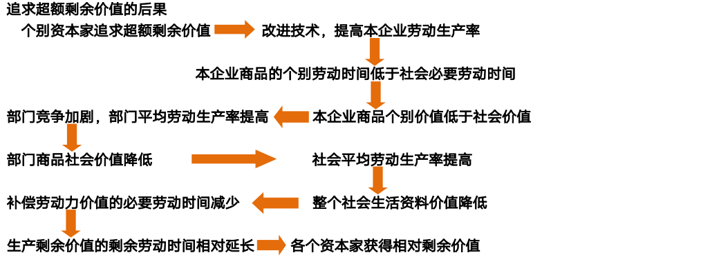

马克思主义
世界观、方法论和哲学
世界观: 对整个世界的总体看法和根本观点。
方法论：认识和改造世界所遵循的根本方法的学说和理论体系。
哲学: 系统化、理论化的世界观，又是方法论
价值观：是人们关于价值本质的认识以及对人和事物的评价标准、评价原则和评价方法的观点的体系。
哲学基本问题
思维和存在的问题：第一性问题，同一性问题
由此引申出(历史)唯物主义和(历史)唯心主义, 可知论和不可知论
辩证法:用联系的、发展的观点看世界，发展的根本原因在于事物的内部矛盾
形而上学:用孤立的、静止的观点看世界，否认事物内部矛盾的存在和作用
马克思主义的基本组成部分
- 马克思主义的三个基本组成部分
- 马克思主义哲学
- 马克思主义政治经济学
- 科学社会主义
物质与运动
物质的唯一特性是客观实在性
- 运动是物质的存在方式和根本属性
意识观
注意
意识具有主观性特性：反映形式不同；不同意识主体的差别性；在映像上对客观有时甚至是虚幻的或歪曲的反映
物质与意识的辩证关系
- 物质决定意识
- 意识对物质具有反作用
- 主观能动性和客观规律的统一：尊重客观规律是前提和基础，发挥主观能动性
- 从实际出发前提，努力认识和把握事物的发展规律
- 实践是发挥人的主观能动性作用的基本途径
- 发挥主观能动性还依赖于一定的物质条件与物质手段
唯物主义辩证法
- 客观辩证法：客观事物或客观存在的辩证法|运动和发展规律
- 主观辩证法：人类认识和思维活动的辩证法
辩证思维的主要方法：归纳与演绎、分析与综合、抽象与具体、逻辑与历史
两个总特征：普遍联系和永恒发展
联系
- 联系具有客观性：事物的联系是事物本身固有的，不是主观臆想的
- 联系具有普遍性：
- 任何事物内部的不同部分和要素之间都是相互联系的
- 任何事物都不能孤立存在，都同其它事物处在一定联系中
- 整个世界是相互联系的统一整体
- 联系具有条件性
- 条件对事物发展和人的活动具有支持或制约作用
- 条件是可以改变的
- 改变和创造条件必须尊重事物发展的客观规律
发展
- 发展的实质是新事物的产生和旧事物的灭亡
- 新生事物在辩证否定旧事物的基础上产生，有旧事物不具有的新内容
五大范畴
唯物辩证法的三大基本规律
对立统一规律
从根本上回答了事物为什么会发展的问题
- 对立统一规律是事物发展的根本规律
- 矛盾具有斗争性（无条件的绝对的）和同一性（有条件的相对的）对应于两种基本属性：对立和统一
- 矛盾的普遍性和特殊性
- 主要矛盾与次要矛盾：对事物发展起不同作用
- 主要矛盾在矛盾体系中处于支配地位，对事物发展起决定作用
- 主要方面与次要方面
- 主要矛盾的主要方法决定矛盾的性质
- 两点论与重点论相结合
- 主要矛盾与次要矛盾：对事物发展起不同作用
- 矛盾分析方法的核心要求：具体矛盾具体分析，具体情况具体分析是马克思主义活的灵魂
- 问题是事物矛盾的表现形式，增强问题意识、坚持问题导向，就是承认矛盾的普遍性、客观性
量变质变规律
- 量变是质变的必要准备
- 质变是量变的必然结果
- 量变与质变是相互渗透的
否定之否定规律
- 否定是事物的自我否定
- 否定式事物发展的环节
- 否定是新旧事物联系的环节
- 辩证否定的实质是“扬弃”
世界不是既成事物的集合体，而是过程的集合体
实践与认识
实践的本质
- 人类能动地改造世界的客观物质性活动
三个基本特征
实践在认识活动中的决定作用：
- 实践是认识的来源：实践产生了认识的需要，为认识的形成提供了可能
- 实践是认识发展的动力
- 实践是认识的目的
- 实践是检验认识真理性的唯一标准
认识的本质：主体在实践基础上对客体的能动反映（这其中也包含臆测的部分） 主客体之间是改造与被改造的关系，而不只是反映与被反映的关系。
感性的认识（感觉、知觉和表象）通过实践达成理性认识
从感性认识到理性认识的两个基本条件：
- 投身实践，深入调查，尽可能获取丰富和合乎实际的感性材料
- 经过思考的作用，去粗取精，去伪存真
从认识到实践
- 认识具有反复性和无限性
- 决定了主观与客观、认识与实践的统一是具体的、历史的。
- 认识世界的目的是为了改造世界
- 认识的真理性只有在实践中才能得到检验和发展
认识是一个反复循环和无限发展的过程。这是一个波浪式前进和螺旋式上升的过程。
真理与价值
- 真理具有客观性 |->认识是多元的，而真理是一元的
真理是对客观事物及其规律的正确反映
- 真理具有绝对性和相对性
真理与谬误
- 真理与谬误的区别：在于认识是否正确反映了客观事物及其规律
- 真理与谬误相互对立
- 真理与谬误的对立又是相对的，它们在一定条件下能够相互转化
价值
价值的四个特性
价值评价的三个基本特点
唯物史观
-
社会存在决定社会意识
-
\(物质生产方式 = 生产力 + 生产关系\)
社会意识具有相对独立性：社会意识与社会存在发展的不完全同步性和不平衡性
人类社会发展的基本规律
生产力与生产关系矛盾运动的规律
生产力决定生产关系（性质与变化），而生产关系对生产力具有能动的反作用
两种基本类型
- 以生产资料公有制为基础的生产关系
- 以生产资料私有制为基础的生产关系
经济基础与上层建筑矛盾运动的基础
经济基础是指由社会一定发展阶段的生产力所决定的生产关系的总和
- 社会的一定发展阶段上往往存在多种生产关系，但决定一个社会性质的是其占支配地位的生产关系。
- 经济基础与经济体制具有内在联系。经济体制是社会基本经济制度所采取的组织形式和管理形式，是生产关系的具体实现形式
上层建筑是建立在一定经济基础之上的意识形态以及与之相应的制度、组织和设施
上层建筑：观念上层建筑（意识形态）、政治上层建筑（政治法律制度及设施和政治组织）
国体是指社会各阶级在国家中的地位 政体是指统治阶级实现其阶级统治的具体组织形式
- 经济基础决定上层建筑
- 上层建筑对经济基础具有反作用
- 经济基础与上层建筑的相互作用构成二者的矛盾运动
- 经济基础和上层建筑之间的内在联系构成了上层建筑一定要适应经济基础状况的规律
社会基本矛盾
社会基本矛盾是历史发展的根本动力
- 生产力和生产关系的矛盾
-
经济基础和上层建筑的矛盾
-
阶级和阶级斗争是人类社会发展到一定阶段才会出现的社会现象
- 阶级斗争是阶级社会发展的直接动力
- 马克思主义的阶级分析方法是认识阶级社会的科学方法
- 社会革命的实质是革命阶级推翻反动阶级的统治，用新的社会制度代替旧的社会制度，解放生产力，推动社会发展
人民群众是历史的创造者
人民群众创造历史的活动受到一定社会历史条件的制约
杰出人物是历史人物中对推动历史发展做出重要贡献或起重要作用的人
历史人物，在历史上发挥什么样的作用，都要受到社会发展客观规律的制约，而不能决定和改变历史发展的总进程和总方向。
资本主义的本质及规律
- 资本主义的本质及规律：商品经济、价值规律、资本积累、资本周转、剩余价值理论、经济危机、国家政治制度和意识形态
商品经济和价值规律
自然经济的生产目的：是直接满足生产者个人或经济单位的需要
商品经济：是以交换为目的而进行生产的经济形式
商品二因素
-
交换价值首先表现为一种使用价值同另一种使用价值相交换的量的关系或比例
-
作为商品，必须同时具有使用价值和价值两个因素。
劳动二重性
劳动的二重性决定了商品的二因素
决定商品价值量的不是生产商品的个别劳动时间，而是社会必要劳动时间
-
社会必要劳动时间：在现有的社会正常的生产条件下，在社会平均的劳动熟练程度和劳动强度下制造某种使用价值所需要的劳动时间
-
劳动生产率：劳动者生产使用价值的效率
劳动生产率水平越高，单位时间内生产的商品数量越多，生产每件商品所需要的社会必要劳动时间就越少，单位商品的价值量就越小，反之就越大。
在相同的劳动时间里，复杂劳动创造的价值大于简单劳动创造的价值
价值规律
- 商品的价值量由生产商品的社会必要劳动时间决定
- 商品交换以价值量为基础，按照等价交换的原则进行
资本主义的基本矛盾：生产资料的资本主义私人占有和生产社会化之间矛盾
劳动力成为商品与货币转化为资本
资本主义经济制度的产生：资本主义萌芽、资本原始积累：暴力掠夺土地，货币财富。
资本主义雇佣劳动制度的形成是以劳动力成为商品为前提的。
劳动力成为商品的基本条件：劳动者是自由的，劳动者没有别的商品可以出卖
劳动力的价值：
- 维持劳动者本人生存所必需的生活资料的价值
- 维持劳动者家属的生存所必需的生活资料的价值
- 劳动力接受交予贺寻龙所支出的费用
劳动力商品的特点
- 使用价值是价值源泉，它在消费过程中能够创造新的价值，而且这个新的价值比劳动力本身的价值大
资本主义所有制的本质
-
资本家凭借对生产资料的占有，在等价交换原则的掩盖下，雇佣工人从事劳动，无偿占有雇佣工人创造的剩余价值，资本与雇佣劳动的关系由此具有了剥削与被剥削的对抗性质。
-
生产剩余价值
- 是超过劳动力价值的补偿这个一定点而延长了的价值形成过程
- 必要劳动：用于再生产劳动力的价值 <- 工人获得相应报酬
- 剩余劳动：用于无偿地为资本家生产剩余价值 <- 工人本应该获得报酬但被资本家无偿占有
- 是超过劳动力价值的补偿这个一定点而延长了的价值形成过程
-
资本是可以带来剩余价值的价值
- 生产资料（不变资本（c））
- 厂房、机器等
- 原材料、燃料等
- 劳动力 - 工资 - 可变资本（v）（还包含一定量的剩余价值）
- 生产资料（不变资本（c））
-
资本主义劳动过程的两个特点
- 工人在资本家的监督下劳动，他们的劳动隶属于资本家
- 劳动的成果或产品全部归资本家所有
-
资本主义生产过程的主要方面是价值增殖过程，即剩余价值的生产过程
商品的价值构成公式\(W=c + v + m\) 剩余价值率，剩余价值与可变资本的比率：\(m' = \frac{m}{v}\)
生产剩余价值的两种基本方法
- 绝对剩余价值的生产
- 在必要劳动时间不变的条件下，由于延长工作日的长度和提高劳动强度而产生的剩余价值
- 相对剩余价值的生产
- 在工作日长度不变的条件下，通过缩短必要劳动时间而相对延长剩余劳动时间所生产的剩余价值

资本主义再生产的特点是扩大再生产
资本构成：
- 从自然形式看：由生产资料和劳动力构成（技术构成）
- 从价值形式看：由不变资本和可变资本构成（价值构成资本有机构成（C:V））
随着资本积累而产生的失业是由资本追逐剩余价值引起资本有机构成的提高所导致的
资本循环与周转
资本循环三阶段
- 购买阶段——货币资本职能（准备生产m）
- 生产阶段——生产资本职能（生产m）
- 售卖阶段——商品资本职能（实现m）
生产力的发展和追逐超额剩余价值->资本有机构成提高->对劳动力需求减少但劳动力供给不变或增加->产生相对过剩人口（流动、潜在、停滞）->矛盾日益加剧->资本主义制度的必然灭亡
资本主义工资本质是劳动力的价值或价格
剩余价值是对可变资本而言，利润是对全部垫付资本而言，剩余价值是利润的本质，利润是剩余价值的转化形式，掩盖了资本主义剥削的实质。
剩余价值理论的意义
资本主义的基本矛盾是生产社会化和生产资料资本主义私人占有之间的矛盾
生产过剩是经济危机的本质特征
资本主义的基本矛盾是经济危机的根本原因
- 生产无限扩大的趋势与劳动人民有支付能力的需求相对缩小的矛盾
- 单个企业内部生产的有组织性和整个社会生产的无政府状态之间的矛盾。
资本主义国家的选举制度的实质政治作用时协调统治阶级内部利益关系和矛盾的重要措施
国家垄断资本主义
宏观调控：国家运用财政政策、货币政策等经济手段，对社会总供给和总需求进行调节，以实现经济快速增长、充分就业、物价稳定和国际收支平衡的目标。
微观调控：国家运用法律手段规范市场秩序，限制垄断，保护竞争，维护社会公众的合法权益。
经济全球化的表现
- 生产全球化，分工
- 贸易全球化，商品和劳务自由流动
- 金融全球化。世界各国、各地区在金融业务、政策等方面相互协调、相互渗透、相互竞争不断价钱。
启示
将理论教条化，经验神圣化，必然犯错
马克思的整个世界观不是教义，而是方法。它提供的不是现成的教条，而是进一步研究的出发点和供这种研究使用的方法 —— 恩格斯
理论的根本任务是回答并指导解决问题